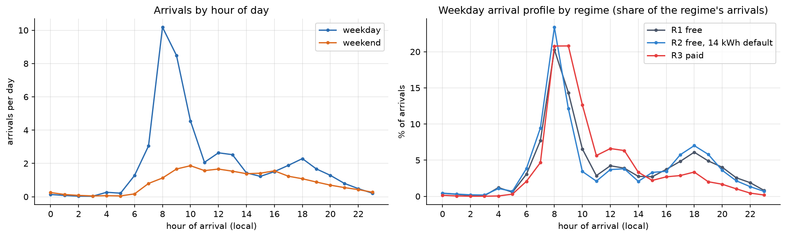
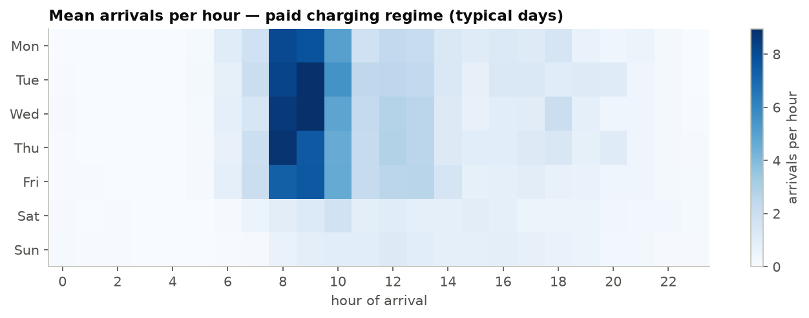
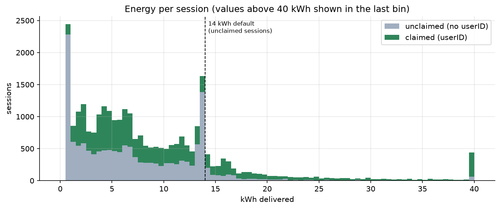
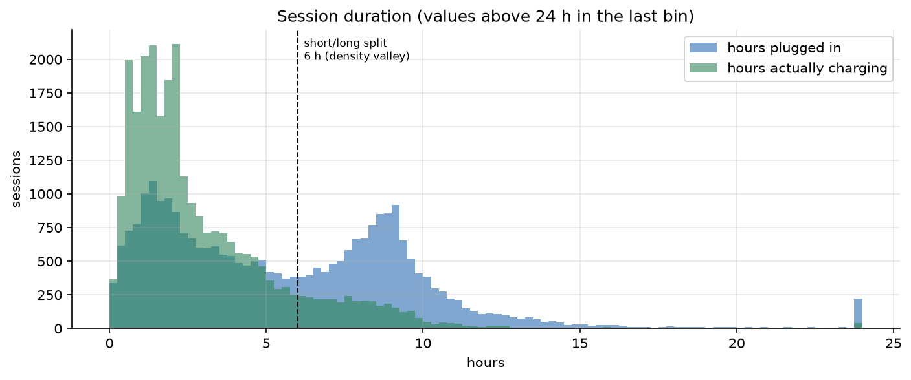
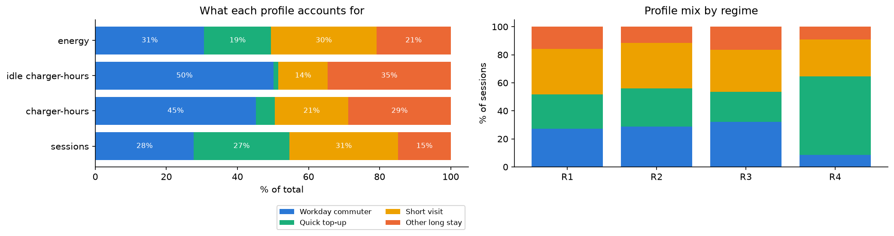
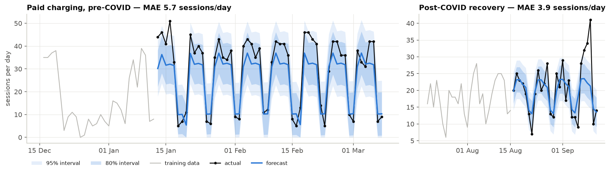
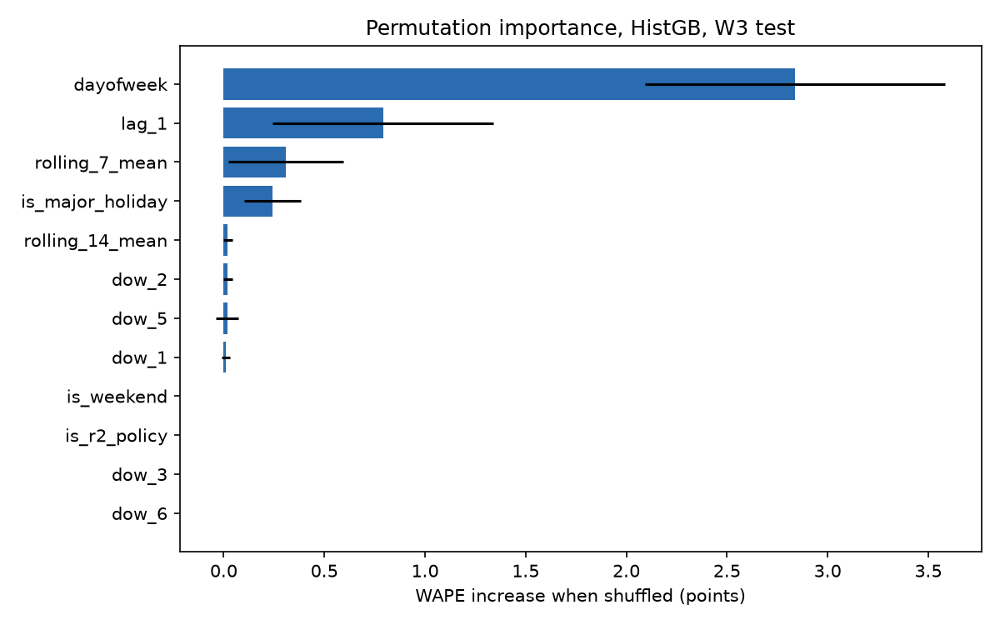
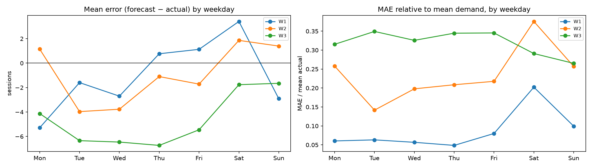
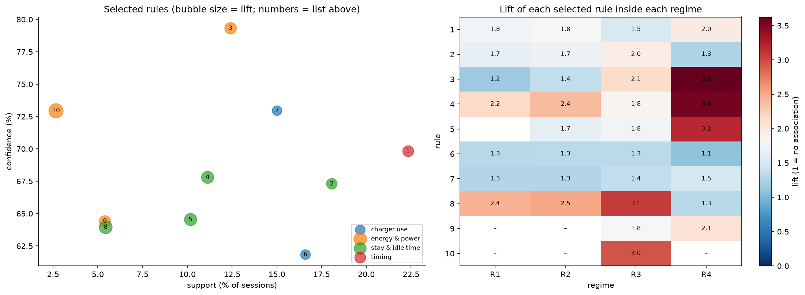
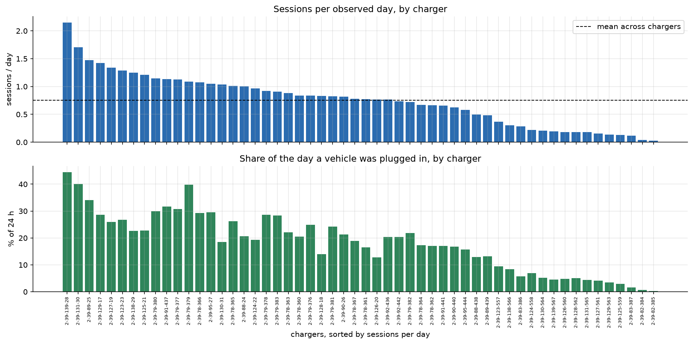

Executive Overview
Key performance indicators across all charging regimes · ACN Caltech Campus · Apr 2018 – Sep 2021
Daily Sessions — Full Timeline with Regime Transitions
7-day rolling average overlaid · regime colour-coded · interactive filters apply to this chart
Charging Demand Patterns
Session frequency, intraday arrival distributions and day-of-week effects
Average Sessions by Day of Week
Busiest Tue (50.8/day) · quietest Sun (19.8/day) · filtered by regime/day type
Intraday Arrival Profile
Weekday arrivals per hour · 06–10 window = 43% of sessions
Arrivals by Hour (Notebook Figure)

Figure F02 — arrivals per hour, all sessions (data-computed)
Weekday × Hour Heatmap

Figure T06 — session density by weekday and hour
Monthly Session Volume — Weekday vs Weekend
Average sessions per active day · regime shaded
Energy Consumption Patterns
Per-session energy, duration distributions and behaviour-profile efficiency
Energy per Session Distribution
Right-skewed · notable 13–14 kWh spike (2.8× neighbouring bins — 14 kWh cap artefact)

Figure F05 — energy distribution, data-computed from 31,387 sessions
Charging Duration Distribution
Bimodal: short stays (<2 h) and long commuter stays (≥6 h)

Figure F07 — plugged-in duration distribution
Behaviour Profile — Session & Charger-Hour Share
From association rule analysis · 4 profiles derived from stay duration and arrival time

Figure R02 — charger-hour and session share by behaviour profile
Energy Efficiency by Profile
kWh delivered per charger-hour plugged in
Time-Series Forecast
SARIMAX models — held-out evaluation and 8-week forward forecast · Sep–Nov 2021
Held-out Period: Actual vs Forecast (Paid Regime)
SARIMAX paid model (Jan–Mar 2020) · MAE 5.7, WAPE 19%, 80% PI covers 86% of days

Figure T12 — SARIMAX holdout evaluation (paid regime, data-computed)
Forward Forecast: Sep – Nov 2021
Post-COVID recovery SARIMAX · busiest day Fri 5 Nov (32 sessions) · 80%/95% prediction intervals
Predictive Model Results
Next-day demand forecasting across three test windows · 7 candidate models evaluated by time-series CV
WAPE by Test Window — HistGB vs Best Baseline
Lower is better · W3 baseline wins in the volatile recovery phase
Model Comparison — All Algorithms
Mean CV WAPE across W1, W2, W3 test windows
Permutation Feature Importance — W3 (Recovery)
Top predictors: day-of-week, lag_1, rolling_7_mean

Figure — permutation importance for HistGB champion model, W3 recovery window
Residuals by Day of Week
Error distribution reveals weekend under-forecasting in recovery

Figure — held-out residuals by day of week
Detailed Test-Window Results
HistGB vs best adaptive baseline · each window evaluated once on held-out data
| Window | Period | Regime | HistGB WAPE | MAE | Bias | Best Baseline WAPE | Delta | Verdict |
|---|---|---|---|---|---|---|---|---|
| W1 | Oct 2018 | Free (R2) | 7.6% | 5.9 | −1.2 | 8.1% (lag7-naive) | +0.5 pts | Better |
| W2 | Dec 2019 – Feb 2020 | Paid (R3) | 21.2% | 5.4 | −0.9 | 31.1% (dow-mean 4w) | +9.9 pts | Better |
| W3 | Jun 2021 – end | Recovery (R4) | 32.6% | 5.5 | −4.6 | 21.4% (dow-mean 4w) | −11.2 pts | Baseline wins |
| S1 | Nov 2018 | First paid month | 43.1% | 18.8 | +18.7 | 42.4% | −0.7 pts | Stress (excluded) |
| S2 | Mar–Apr 2020 | First COVID weeks | 1213.8% | 14.5 | +14.5 | 301.8% | −912 pts | Regime break |
Association Rule Analysis
295 final rules mined from 31,387 sessions · 165 behaviour · 130 policy-driven · ranked by leverage
Top Behaviour Rules — Lift and Support (Notebook Figure)

Figure R01 — selected headline rules with support, confidence and lift (data-computed)
Top Headline Association Rules
Sorted by lift · filtered by theme
| Rule | Theme | Support | Confidence | Lift | Sessions/week | Regimes holding |
|---|
Station & Site Utilisation
Charger-level demand concentration, occupancy profile and capacity planning
Station Utilisation — Session Count per Charger (Notebook Figure)

Figure F09 — session count ranked by charger (data-computed from all 31,387 sessions)
Weekday Occupancy Profile
Avg vehicles plugged in by hour · peak 28.1 at 13:00 · max 94% occupancy
Station Load Distribution (Lorenz Curve)
Cumulative sessions vs stations ranked by usage · Gini 0.34